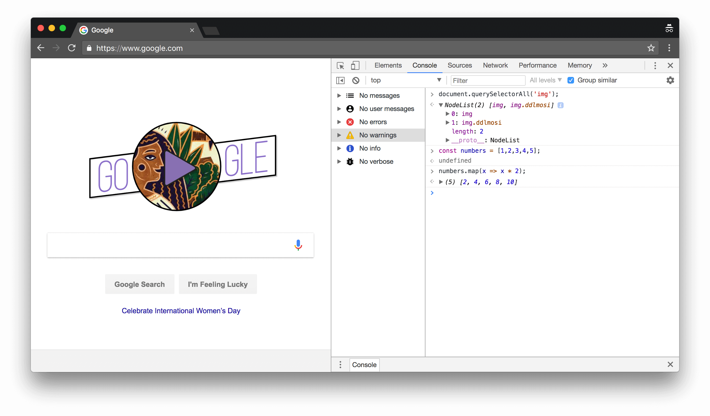

Experiment - 01
Aim: To study Web debugger (Chrome DevTools)
1. DevTools
Chrome DevTools is a set of web developer tools built directly into the Google Chrome browser. DevTools can help you edit pages on-the-fly and diagnose problems quickly, which ultimately helps you build better websites, faster.
There are many ways to open DevTools, because different users want quick access to different parts of the DevTools UI.
- When you want to work with the DOM or CSS, right-click an element on the page and select Inspect to jump into the Elements panel. Or press Command+Option+C (Mac) or Control+Shift+C (Windows, Linux, Chrome OS).
- When you want to see logged messages or run JavaScript, press Command+Option+J (Mac) or Control+Shift+J (Windows, Linux, Chrome OS) to jump straight into the Console panel.
2. DevTools Features:
2.1 Device Mode
- Device Mode
- Test Responsive and Device-specific Viewports
2.2 Elements panel

Fig 1.1 Element panel DevTool
View and change the DOM and CSS.
- Inspect and Tweak Your Pages
- Edit Styles
- Edit the DOM
- Inspect Animations
- Find Unused CSS
2.3 Console panel

Fig 1.2 Console panel DevTool
View messages and run JavaScript from the Console.
- Interact from Command Line
- Console API Reference
2.4 Sources panel
Debug JavaScript, persist changes made in DevTools across page reloads, save and run snippets of JavaScript, and save changes that you make in DevTools to disk.
- Pause Your Code With Breakpoints
- Save Changes to Disk with Workspaces
- Run Snippets Of Code From Any Page
- JavaScript Debugging Reference
- Persist Changes Across Page Reloads with Local Overrides
- Find Unused JavaScript

Fig 1.3 Source panel DevTool
2.5 Network panel
View and debug network activity.
- Network Issues Guide
- Network Panel Reference
2.6 Performance panel
Find ways to improve load and runtime performance.
- Optimize Website Speed
- Performance Analysis Reference
- Analyze runtime performance
- Diagnose Forced Synchronous Layouts
2.7 Memory panel
Profile memory usage and track down leaks.
- Fix Memory Problems
- JavaScript CPU Profiler
2.8 Application panel
Inspect all resources that are loaded, including IndexedDB or Web SQL databases, local and session storage, cookies, Application Cache, images, fonts, and stylesheets.
- Debug Progressive Web Apps
- Inspect and Manage Storage, Databases, and Caches
- Inspect and Delete Cookies
- Inspect Resources
2.9 Security panel
Debug mixed content issues, certificate problems, and more.
3. Exploring Feature:
3.1 Testing our college website at different viewports checking responsive (Fig 4)

Fig 1.4 Responsiveness of Website
3.2 Change Content of web Page (Fig 5)
Fig 1.5 Changing content of web page
3.3 Updating CSS of web page (Fig 6)
Fig 1.6 UPdating CSS of web page
3.4 Checking performance of our university website (Fig 7)
Fig 1.7 Performance of a Website
3.6 To check security of website and certificate details (Fig 8)
Fig 1.8 Security details of a website